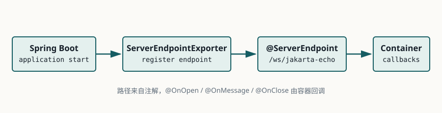

Lesson 0004 · Jakarta WebSocket
用 Jakarta 实现同一个回显端点
本课的唯一目标：用 Jakarta @ServerEndpoint 实现第二个回显端点，并能解释它与 Spring TextWebSocketHandler 的边界。
本课的独立示例位于 examples/0004-jakarta-server-endpoint。它不依赖第三课的源码或构建目录。
1. Endpoint：用注解声明生命周期回调
新建一个 endpoint，路径不要和第三课的 /ws/echo 冲突：
package com.example.websocket;
import jakarta.websocket.OnClose;
import jakarta.websocket.OnMessage;
import jakarta.websocket.OnOpen;
import jakarta.websocket.Session;
import jakarta.websocket.server.ServerEndpoint;
@ServerEndpoint("/ws/jakarta-echo")
public class JakartaEchoEndpoint {
@OnOpen
public void onOpen(Session session) {
System.out.println("Jakarta WebSocket opened: " + session.getId());
}
@OnMessage
public String onMessage(String message) {
return "echo: " + message;
}
@OnClose
public void onClose(Session session) {
System.out.println("Jakarta WebSocket closed: " + session.getId());
}
}
@OnMessage 返回的字符串会作为文本消息发送回客户端。这个 endpoint 没有使用 Spring @Component；它的生命周期由 Jakarta WebSocket 容器管理。
2. 在嵌入式容器中注册 endpoint
Spring Boot 运行在嵌入式 Tomcat 中时，添加一个 ServerEndpointExporter Bean，让 Spring 发现并注册带有 @ServerEndpoint 的类：
package com.example.websocket;
import org.springframework.context.annotation.Bean;
import org.springframework.context.annotation.Configuration;
import org.springframework.web.socket.server.standard.ServerEndpointExporter;
@Configuration
public class JakartaWebSocketConfig {
@Bean
public ServerEndpointExporter serverEndpointExporter() {
return new ServerEndpointExporter();
}
}
ServerEndpointExporter 适用于 Spring Boot 的嵌入式容器。若部署到已经负责扫描和注册 endpoint 的 Jakarta WebSocket 容器，通常不应重复配置它；以实际容器部署方式为准。
3. 验证两个端点
在本课独立项目中运行下面的客户端代码；如需和 Spring Handler 对比，再单独启动第三课的示例项目：
const springSocket = new WebSocket("ws://localhost:8080/ws/echo");
springSocket.onopen = () => springSocket.send("from spring");
springSocket.onmessage = event => console.log(event.data);
const jakartaSocket = new WebSocket("ws://localhost:8080/ws/jakarta-echo");
jakartaSocket.onopen = () => jakartaSocket.send("from jakarta");
jakartaSocket.onmessage = event => console.log(event.data);
两个 Network WS 请求都应返回 101，并分别收到 echo: from spring 与 echo: from jakarta。
4. 源码导读：谁管理 endpoint
配置类中的 ServerEndpointExporter 是注册桥梁：它把带有 @ServerEndpoint 的endpoint交给嵌入式 WebSocket 容器。
Spring Boot 启动
↓
JakartaWebSocketConfig.ServerEndpointExporter
↓
@ServerEndpoint("/ws/jakarta-echo")
↓
@OnOpen / @OnMessage / @OnClose

这里没有 Spring Handler 的 registerWebSocketHandlers 调用。路径来自注解，消息回调来自 Jakarta 注解，endpoint 生命周期由容器管理。这个差异正是本课要掌握的源码边界。
测试使用随机端口的真实 Web 环境，因为 ServerEndpointExporter 需要容器提供 ServerContainer；默认 Mock Web 环境无法证明 endpoint 注册成功。
5. 两种模型的取舍
| 维度 | Spring WebSocket Handler | Jakarta @ServerEndpoint |
|---|---|---|
| 入口 | WebSocketConfigurer 显式注册路径。 | @ServerEndpoint 声明路径。 |
| 回调 | 继承 TextWebSocketHandler 等 Handler。 | 使用 @OnOpen、@OnMessage、@OnClose 等注解。 |
| 容器整合 | 直接进入 Spring 的 WebSocket 抽象和 Bean 管理。 | 遵循 Jakarta WebSocket 标准，由 WebSocket 容器管理 endpoint 生命周期。 |
| 依赖注入 | Handler 可以直接使用构造器注入。 | 需要额外的 Spring/Jakarta 集成方式，不能默认假设 endpoint 可直接按普通 Spring Bean 注入。 |
| 适合场景 | Spring 应用内需要拦截器、统一配置和 Spring 组件协作。 | 希望依赖标准 API，或需要与 Jakarta WebSocket 容器模型保持一致。 |
两种实现都建立在同一个 WebSocket 协议之上：浏览器看到的仍然是 HTTP Upgrade、101、帧和 Close。变化的是服务端编程模型，不是线上的协议。
6. 练习：先回忆，再验证
完成两个端点的验证后，回答下面 4 个问题：
-
为什么 Jakarta endpoint 需要
ServerEndpointExporter？查看答案
在 Spring Boot 嵌入式容器中，它负责发现带有
@ServerEndpoint的类并向底层 WebSocket 容器注册。没有它时，endpoint 可能不会被映射到请求路径。 -
两个端点使用不同的 Java API，为什么浏览器看到的握手仍然相同？
查看答案
Spring Handler 和 Jakarta endpoint 都实现同一个 WebSocket 协议。它们只改变服务端的编程模型，线上仍然使用 HTTP Upgrade、101 和 WebSocket 帧。
-
为什么不能默认把 Jakarta endpoint 当成普通 Spring singleton 使用？
查看答案
endpoint 的实例和生命周期由 Jakarta WebSocket 容器管理，不等同于普通 Spring Bean。需要共享状态或依赖注入时，应显式设计集成方式，并保证并发安全。
-
如果 Spring 端点返回 101，而 Jakarta 端点返回 404，你会优先检查什么？
查看答案
先检查
@ServerEndpoint的路径、类是否被 exporter 发现、ServerEndpointExporterBean 是否生效，以及请求路径是否准确写成/ws/jakarta-echo。
快速检查：Spring Handler 和 Jakarta endpoint 的主要差异是什么？